Pywel Legend
PlatinumФинал профиля: появится только после остальных 34 трофеев.
Финальный аудитГлавное правило маршрута: сначала открываете логистику и активируете нужные категории испытаний через Артефакты Бездны, а уже потом гриндите убийства, оружие, форты, мини-игры и побочные системы. Иначе часть прогресса просто не запишется туда, куда вам нужно.
Главная мысль: первые часы здесь решают не сюжет, а порядок открытия систем. До свободной зачистки вам нужно понять, с какого состояния вы заходите в прохождение, и не дать игре съесть будущий прогресс по испытаниям.
Что держим в голове сразу: на PlayStation 5 профиль закрывается через 35 трофеев вместе с Pywel Legend. На других платформах логика прохождения почти та же, но без платиновой плашки; рискованные окна и порядок категорий от этого не меняются.
Идете фазы подряд: логистика, Артефакты Бездны, история, тяжелые пакеты и только потом бытовые хвосты.
Сначала сверяете фазы 2 и 3: важно понять, открыты ли нужные категории испытаний и не выжжены ли удобные точки под фарм.
Проверяете фазы 3, 6 и 8: именно там чаще всего вскрываются сломанный прогресс оружия, форты и незакрытые живые системы мира.
Pywel Legend - это не отдельная активность, а финальный флажок на весь профиль PS5. Сюжетный каркас держится на Novice Adventurer, Master Camper, Protector of Pailune, Expert Storyteller и Proud Returnee.
Важно понимать ритм: первые четыре трофея вы в основном получаете по истории, а Proud Returnee уже требует не просто пройти главы, а довести лагерь Серых Грив до переезда в Пайлун. То есть даже «сюжетный пакет» здесь частично завязан на лагерь, ресурсы и позднее окно после седьмой главы.
Expert Explorer - большой пакет мира, куда сходятся Бездна, секретные места, древние руины, святилища и лабиринты. Отдельно идут Conqueror of Spires и Navigator of the Stars.
Практически это несколько разных мини-кампаний внутри одной большой: около 40 зон Бездны, 60 секретных мест, 37 руин, 16 святилищ и 4 лабиринта. У них разный ритм, поэтому полезнее вести их очередями, а не воспринимать как один бесконечный список галочек.
Шпили и созвездия тоже лучше держать рядом, но отдельно в голове: часть шпилей сюжетно закрыта, а звездный пакет упирается в Constellation Helm, Gate of Truth и сундуки по небесным подсказкам, а не в случайные вылазки «раз уж был рядом».
Unvanquished Strategist, Brilliant Tactician, Battlefield Conqueror, Relentless Warrior, Grand Collector of Arms и Master of Artillery - главные поглотители времени, если прийти к ним без фундамента.
Этот блок нельзя брать наскоком: здесь 64 испытания оружейного мастерства, отдельные категории на тактику, большие баталии, спецоружие и ручную пушку. Самая частая ошибка - прыгать между Клиффом, Дамианой и Унгкой без порядка и терять понимание, какая категория вообще сейчас должна двигаться.
Shadowlord, Lord of Honor, The Golden Merchant, True Gamer, Ultimate Hunter, Natural Collector, Tamer of Legends удобнее добивать отдельным большим блоком, когда карта уже раскрыта.
Это важный психологический момент маршрута: бытовые трофеи здесь совсем не «фоновые». Преступность требует маски и локальных серий действий, торговля - логистики и денег лагеря, мини-игры - отдельных спокойных сессий, а маунты и охота плохо закрываются по остаточному принципу «когда-нибудь потом».
Испытания Operation и спецоружие: не относитесь к ним как к мусорным хвостам. У таких задач часто есть живое окно: нужная вражеская точка, оригинальный экземпляр оружия, правильная глава или еще не выжженный форт.
Подозрительный прогресс: если категория не засчитывается, сразу идите в журнал испытаний Journal - Challenges и проверяйте, активирована ли она артефактом, верный ли тип убийства вы делаете и не уперлись ли в патч-чувствительную механику. Час проверки здесь дешевле десяти часов пустого фарма.
Сейв-дисциплина: отдельный слот держите перед большими зачистками, тяжелыми баталиями и любым куском, где можно навсегда потерять удобную экосистему врагов или предмет под трофей.
Финал не отменяет сейвы: после истории мир остается открыт, но повторного прохождения сюжетных и фракционных квестов нет. Если нужен откат под редкое испытание, лучше иметь его заранее, чем надеяться на послесюжетную магию.
Ниже не отдельный список ради галочки, а быстрый компас: какой трофей за что отвечает и на какой фазе его удобно держать в голове. Иконки и названия сверены по основной дорожной карте трофеев.
Финал профиля: появится только после остальных 34 трофеев.
Финальный аудитАвтоматический стартовый трофей за 1 главу.
Фаза 5 / история
Автоматически прилетает при активации лагеря на Howling Hill.
Фаза 5 / лагерь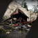
Сюжетный рубеж после Chapter 7 и Time to Face Justice.
Фаза 5 / историяПереезд лагеря в Пайлун и ветка Reconstructing Pailune.
Фаза 5 / лагерьЗолото за весь сюжет: 12 глав плюс пролог и эпилог.
Фаза 5 / финал сюжета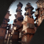
Все 4 лабиринта. Удобнее брать уже с нормальной логистикой.
Фаза 6 / мир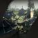
Все 8 шпилей. Часть маршрута открывается только позже по сюжету.
Фаза 6 / мир
Созвездия, Gate of Truth и небесные сундуки.
Фаза 6 / мир60 секретных мест. Не оставляйте их на один огромный добор.
Фаза 6 / мир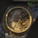
37 древних руин и пазлы на полный зачёт.
Фаза 6 / мир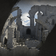
16 святилищ. Хорошо ложатся в отдельную очередь зачистки.
Фаза 6 / мирВсе испытания Бездны после раннего открытия категорий.
Фаза 6 / Бездна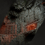
Главное мировое золото: 9 подкатегорий исследования в одном пакете.
Фаза 6 / большой мирВсе мечевые испытания.
Фаза 6 / мастерство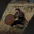
Все испытания со щитом.
Фаза 6 / мастерство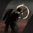
Все испытания с луком.
Фаза 6 / мастерство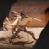
Все испытания с копьями.
Фаза 6 / мастерство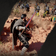
Все испытания с двуручами.
Фаза 6 / мастерство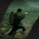
Все пушечные испытания; держите в голове багнутые нюансы.
Фаза 3-6 / пушкаВсе испытания рапиры и щита.
Фаза 6 / мастерствоВсе испытания огнестрела.
Фаза 6 / мастерство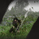
10 тренировочных испытаний.
Фаза 6 / тренировка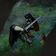
10 боевых испытаний и живые боевые зоны.
Фаза 3-6 / battle10 испытаний категории Operation; именно здесь больше всего условно рискованных окон.
Фаза 3-6 / ветка Operation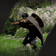
10 испытаний особого оружия: не ломайте и не отдавайте важные стволы.
Фаза 3-6 / спецоружиеИспытания ветки New Power и боссовые техники.
Фаза 6 / боссы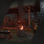
Главное боевое золото: все 10 подкатегорий мастерства.
Фаза 6 / большой гринд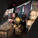
Все торговые испытания: деньги, контракты и логистика.
Фаза 7 / торговляВетка Above the Law: маска, кражи, двери, флаги, розыск.
Фаза 7 / преступность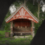
Ветка Challenges and Changes; в старых материалах может называться Greymane's Vow.
Фаза 7 / Серые Гривы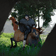
Испытания верховой езды и легендарные маунты.
Фаза 7 / маунтыВсе 5 подкатегорий мини-игр; часть удобнее делать после знакомства с системами.
Фаза 7 / мини-игры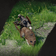
11 охотничьих испытаний.
Фаза 7 / охота12 бытовых испытаний: ???-предметы, ресурсы, знания и мирная фауна.
Фаза 7 / lifeСамая дорогая ошибка в Crimson Desert - начать играть «естественно» и оставить Артефакты Бездны на потом. Почти весь большой гринд в этой игре завязан на категорию испытаний, а категории часто не считают прогресс задним числом.
Это не косметика, а включатель больших пакетов испытаний по миру, бою и побочным системам.
Ищите артефакты не вслепую: свет, белое свечение и значок куба на мини-карте - ваши базовые инструменты.
Большинство алтарей удобно собирать вдоль главных маршрутов после нормального раскрытия карты.
Главная угроза здесь не один безвозвратно пропускаемый трофей, а полезные действия, сделанные слишком рано. Если категория испытаний еще не открыта, профиль может просто не принять нужный зачет.
Классический провал из ваших исходников - часы, вложенные в стрельбу, копья или форты до активации нужного артефакта. Пока вы не подобрали и не включили предмет в инвентаре, а цепочка не появилась в журнале испытаний Journal - Challenges, игра часто считает, что нужной категории для вас еще не существует.
Прежде чем жить в открытом мире как в песочнице, лучше как можно раньше активировать максимум Скрытых Колоколов, поставить сеть Abyss Nexus и только потом системно собирать артефакты. Важно: Pailune Bell сюжетно закрыт на старте, так что формулу «сразу открыть все 8» для ранней игры лучше не повторять без оговорки.
Сами артефакты удобнее искать не по наитию, а через короткий ритуал: идете вдоль дорог, даете Guiding Light, смотрите на белое свечение ночью и держите в поле зрения фиолетовый куб на мини-карте. По исходникам радиус подсветки около 30 метров, а глобальная карта тут не помогает, так что без этой рутины легко пробежать мимо.
По вашим исходникам через Артефакты Бездны рано или поздно завязаны оружейное мастерство, секретные места, исследование Бездны, руины, святилища, боевые испытания, шпили, торговля, преступность и часть мини-игр.
Если говорить совсем приземленно, артефакты включают учет для самых дорогих категорий: 64 оружейных испытаний, 60 секретных мест, 40 зон Бездны, 37 руин, 16 святилищ, пакетов на шпили, преступность, торговлю и даже отдельные «игры разума». Поэтому мыслить ими как коллекционкой нельзя: это ваш рубильник прогресса.
Платина чаще ломается не на боссе, а на неверном порядке действий. Самые опасные зоны здесь - ранняя зачистка фортов, обращение с уникальным оружием и отдельные проблемные испытания ручной пушки.
Для части боевых и артиллерийских испытаний нужны живые башни, укрепления и рабочие точки на карте.
Пока не закрыли связанные испытания, уникальный ствол - это рабочий инструмент, а не мусор.
В ранних материалах второе пушечное испытание стабильно всплывает как багнутое, а четвертое долго оставалось плохо документированным, так что весь пушечный пакет лучше вести осторожно.
Пока вы не добрались до системного закрытия боевых категорий, мир должен оставаться чуть-чуть живым. Не делайте из ранней карты стерильную пустыню без башен и укреплений.
По вашим заметкам это особенно важно для Battlefield Conqueror и части Master of Artillery: испытания вроде Sinking Fort и поздних пушечных задач требуют реальных сторожевых башен и фортификаций. Если заранее освободить все крупные точки, потом придется не фармить, а искать, где вообще еще осталась рабочая цель.
Bismuth Spear и похожие экземпляры со скрытой прочностью могут сломаться до завершения нужного испытания. Нашли ломкое уникальное оружие - сразу смотрите привязанное испытание и закрывайте его в ближайшее удобное окно.
Здесь опасны сразу две вещи: продажа и износ. Проданные уникальные предметы действительно лучше не отпускать до закрытия испытаний, но формулировку про «окончательную блокировку прогресса» лучше смягчить: часть экземпляров игроки возвращают через выкуп, экспедиции или повторный дроп. Что выглядит подтвержденным лучше всего: прогресс часто считается именно на оригинальном экземпляре, а поздняя крафтовая версия вроде Kuku Bismuth Spear или улучшенного аналога для Lightning Spear может не засчитываться. Для читателя честнее называть это не гарантированной поломкой сейва, а дорогой зоной риска, которую проще не создавать.
Если нужен короткий список того, что в пакете Operation лучше закрывать пораньше, то первым делом смотрите на Hidden Banner Pike и Disruption. Формально это не история про безвозвратно пропускаемый трофей, но оба испытания сидят на врагах, которых по ходу сюжета и зачистки мира становится заметно неудобнее фармить.
Hidden Banner Pike просит убить 10 солдат с banner pike в Демениссе за 30 минут, и удобнее всего гонять это окно через точки вроде Southern Court с быстрым обновлением врагов от ближайшего Abyss Nexus; тот же принцип работает для Western Court и Eastern Court, пока вы не освободили их окончательно. Disruption завязан на 10 One-Eyed Jackals в Black Bear's Leather Helm, который нормально входит в маршрут только с 8 главы. Практический вывод простой: как только у вас в руках есть нужный шлем и еще жива удобная вражеская экология региона, закрывайте испытание сразу, а не оставляйте на послесюжетный мусорный круг.
По ранним трофейным материалам после релиза как забагованное чаще всего всплывает Barraging Cannon 2 - убийства из Charged Shot не засчитываются. Barraging Cannon 4 при этом не всегда маркируют как баг, но нормальное решение для него долго оставалось мутным, что для маршрута тоже красный флаг.
Если уперлись именно в IV, пользовательский обход со стражей у Гернанда можно держать как запасной вариант, но воспринимать его лучше как запасной маршрут, а не как подтвержденное официальное решение. Практический вывод простой: пушечный пакет зависит от версии патча сильнее, чем это видно на сводной странице, поэтому при любом странном трекинге сразу закладывайте сценарий «материал еще сырой или задача забагована» и не тратьте часы на слепой фарм.
В первые 10-30 часов лучше всего работают четыре задачи: снять туман войны, открыть сеть перемещений, начать последовательный сбор артефактов и не задушить себя инвентарем.
Если оставить туман войны надолго, любая следующая категория превращается в повторную экспедицию в те же регионы. Колокола окупаются потом десятки раз.
По вашим материалам на восемь колоколов легко уходит больше пяти часов, но это один из самых выгодных ранних вкладов во всей платине. После такого захода карта перестает быть черной кашей, и вы уже не ездите во второй или третий раз в тот же регион только потому, что когда-то пробежали его вслепую.
Быстрые перемещения здесь позволяют собирать длинные маршруты по артефактам, шпилям, лагерям и побочным системам без ощущения, что вы каждый раз начинаете новую игру.
Полезная деталь из исходников: узлы часто сидят внутри больших белых зон поиска с вопросительным знаком, а точную точку помогает вытянуть Guiding Light. Поэтому логика ранней фазы простая: увидели новый белый пузырь на карте - не откладывайте, потому что каждый открытый Abyss Nexus потом сэкономит десятки мелких, но очень дорогих возвратов.
У этой платины длинный технический пролог. До комфортного трофейного темпа легко уходит 25+ часов на чистую подготовку профиля: колокола, сеть Abyss Nexus, артефакты, стартовый капитал, инструменты и первые нормальные улучшения.
Практически это значит три вещи. Во-первых, не тяните с покупкой Logging Axe и Pickaxe у снабженца в Гернанде, чтобы сразу включить древесину, руду и понятный денежный цикл. Во-вторых, не тащите сырую экипировку в длинный маршрут: ранняя цель здесь простая - довести рабочий комплект хотя бы до 5-6 уровня улучшения Refinement, чтобы история, побочки и первые тяжелые категории перестали съедать лишние ресурсы. В-третьих, не пропускайте фракционные квесты на расширение инвентаря: быстрый выигрыш по Medium Bags окупается почти в каждой длинной вылазке.
По вашим материалам 80 медных монет - это вход, а не награда. Турнир может быть нужен по испытаниям, но стабильным фармом денег он не является.
Если трофейный маршрут все-таки приводит вас туда рано, держите два практических нюанса: после 4-5 поражений подряд без выхода из диалога ИИ начинает стрелять медленнее, а на PS5 режим производительности Performance Mode заметно ломает ему тайминги. Для реальных денег в начале лучше работать через задания Requests в Гернанде, покупку сумок, добычу Scolecite и Azurite и торговлю краденым скотом, а не пытаться превратить турнир в банк.
Середина прохождения - это момент, когда история должна начать кормить маршрут. Важнее всего здесь три вещи: не забыть про перенос лагеря, подготовить бытовую боеготовность через кухню и улучшения, а также не пропустить полезный срез в двенадцатой главе.
База большинства оружейных категорий и точка, через которую чувствуется логика копирования приемов Watch and Learn.
Рапиры, щиты и огнестрел требуют отдельного внимания, а не «как-нибудь по дороге».
Ручная пушка и тяжелые пакеты закрываются ровнее, когда вы заранее приняли его роль в маршруте.
Лагерь Серых Грив - это не декорация. Он вплетен в маршрут через ресурсы, расширения, наемников, экспедиции и позднюю структуру квестов, поэтому линия с переносом базы должна восприниматься как часть основного пути.
Практически ориентир такой: после Homecoming и квеста Time to Face Justice у вас открывается ветка Reconstructing Pailune, а вместе с ней и Proud Returnee. Если идти по истории инертно и не зафиксировать этот момент, легко уехать дальше по сюжету без важного системного апгрейда базы.
Даже час-полтора экономии в таком маршруте - уже не мелочь. Полезный срез пути лучше знать заранее, а не после полного прохода главы.
По вашим материалам в A Shadow in the Void не нужно добросовестно проходить весь стандартный коридор по островам Бездны. Между Spire of Clockwork и Drywind Valley в русле реки лежит разбитый кубический корабль; простая головоломка внутри телепортирует вас сразу к Dimensional Bonds и отрезает от часа до двух реального времени.
Как только доступны улучшения, точильные камни, рецепты и отдельные роли Клиффа, Дамианы и Унгки, перестаньте воевать старой логикой «пройду силой». Этот блок окупается на мастериях и боссах.
Технически тут сходится сразу несколько обязательных систем: здоровье не восстанавливается само, значит еда - это базовый ресурс выживания; квест кузнеца Turnali открывает систему улучшения Refinement; патч 1.01.00 упрощает готовку через кнопку Make Now; а роли Дамианы и Унгки нужно принять заранее, иначе рапиры, огнестрел и ручная пушка останутся «на потом» и ударят по темпу уже в большом гринде.
После того как у вас поставлена карта и поднят лагерь, начинается настоящий марафон. Лучший способ не задохнуться - не «дочищать мир», а вести крупные пакеты в понятной очередности: сначала исследование, затем шпили и созвездия, потом мастерии и тактика, а уже на этой базе - боссы и экзотика.
Это не один трофей, а комбайн из Бездны, секретных мест, руин, святилищ и лабиринтов.
Conqueror of Spires и Navigator of the Stars требуют отдельного настроя, а не случайных визитов «раз уж рядом».
Оружие, тактика и специальные роли лучше закрывать по категориям, пока вы еще помните, чем именно заняты.
По вашим материалам этот пакет сходится из нескольких крупных подкатегорий: около 40 зон Бездны, 60 секретных мест, 37 древних руин, 16 святилищ и 4 лабиринтов. Это несколько разных ритмов прохождения внутри одного большого блока.
Именно поэтому здесь полезно чередовать типы задач. После парящих островов Бездны удобно уходить в секретные места и руины на земле, а не упираться в один и тот же темп десятки часов подряд. Из конкретных ориентиров в исходниках упоминаются Trial of the Sandscale, Threefold Fork и Peak of Enlightenment - такие точки хорошо работают как якоря для длинных исследовательских сессий.
Часть шпилей сюжетно открывается не сразу, поэтому не пытайтесь выбить весь пакет слишком рано. Constellation Helm удобнее вести отдельной очередью, а не между обычными вылазками.
Из практики ваших материалов: Spire of the Stars полноценно открывается только после главы 4, а внутри требует точного порядка символов на лифте - сверху Hourglass, затем Circle, ниже Triangle и внизу Square. Сам Constellation Helm нужен не только ради красивого неба: он ведет к звездным сундукам и открытию Gate of Truth, поэтому лучше выделять под него отдельный заход.
На боссах здесь важно не только выжить, но и читать бой. Если игра позволяет скопировать прием через удачный блок или уклонение, воспринимайте это как часть маршрута.
Это особенно важно, потому что по вашим материалам в игре 76 уникальных боссов, а пакет Beast Slayer и родственные категории любят проверять не просто урон, а понимание паттернов. Успешно снятые техники вроде Nature's Echo или Force Palm Pulse лучше воспринимать как добычу маршрута, а не как случайный бонус после тяжелого боя.
Почти все, что не относится к сюжету и бою, удобно закрывать одним большим отдельным этапом. В Crimson Desert это не «мелочи напоследок», а тяжелые системы со своими маршрутами: преступность, честь фракции, торговля, мини-игры, охота и укрощение легендарных маунтов.
Этот блок надо вести осознанно и в маске. Удобный подход - закрывать преступный пакет локально: один блок на скрытность и флаги, один на воровство и двери, один на скупщиков краденого и розыск.
Маска здесь не косметика: она прикрывает личность и спасает от резкого падения очков вклада Contribution Points, пока вы поднимаете красные зоны поиска и бегаете от стражи. Из конкретных задач ваших исходников особенно удобно группируются ночные флаги, вскрытие 20 дверей, карманные кражи в трех городах, свиньи, повозки после Strongbox with Wheels и финальный розыск под арест цели с максимальной наградой за голову.
Святилища Серых Грив, расширение лагеря, наемники, печати Signets и Ironcrawler лучше складываются в одну ветку влияния, когда карта уже раскрыта и лагерь живет полной жизнью.
Если раскладывать по делу, то здесь вам нужны 12 святилищ Серых Грив Greymane Shrines, 20 наемников в лагерь, второе расширение базы на Howling Hill, заезд на крыше Ironcrawler минимум на 2 километра и запас вклада Contribution на одновременный выкуп региональных печатей Signets. Когда это делается как единая фракционная кампания, блок ощущается вменяемо; когда вразнобой - превращается в кашу из хвостов.
True Gamer лучше закрывать короткими отдельными сессиями, а не между тяжелыми вылазками. То же самое с охотой и легендарными маунтами: это спокойный тематический блок, а не набор случайных хвостов.
Внутри этого пакета тоже есть конкретика: True Gamer включает дуэли, силовые испытания и карточные игры, а в камень-ножницы-бумагу из ваших заметок можно играть от паттерна после ничьей. Параллельно не забывайте, что Tamer of Legends упирается не только в диких коней, но и в трех легендарных маунтов - Camora, Royler и Rokade, а коллекционные пакеты по охоте и природе плохо закрываются без отдельного спокойного захода по фауне и ресурсам.
Самый неблагодарный поздний гринд здесь рождается не только из боев, но и из бытовых накопительных категорий. Они выглядят безопасно, пока не превращаются в финальный список «где я еще не поднимал это ???».
Поэтому полезное правило простое: увидели новый предмет с меткой ??? - подбирайте хотя бы один экземпляр. То же касается пещер, трав, грибов, насекомых и мирных животных: питомцы требуют доводить доверие до 100, а для Life 9: Pets нужны 30 уникальных зверей. Природные и коллекционные пакеты куда приятнее растут на дистанции, чем в режиме судорожной зачистки карты под конец.
К финалу задача уже не в том, чтобы еще сильнее напрячься. Задача в другом: назвать проблему правильным именем. В Crimson Desert зависший хвост почти всегда лечится не упорством, а точной диагностикой.
Путь к платине складывается в понятную последовательность: сначала логистика и Артефакты Бездны, потом история и лагерь, затем большие исследовательские и боевые пакеты, после них - бытовые системы, а уже в конце - спокойный аудит хвостов.
На практике финальный чек лучше вести по типу поломки, а не по названию трофея. Если не движется испытание - откройте журнал испытаний Journal - Challenges и убедитесь, что категория вообще была активирована артефактом; если зависло оружие - проверьте, что вы фармите на оригинальном экземпляре, а не на позднем крафтовом аналоге; если уперлись в форты - ищите, не выжгли ли карту раньше времени.
Отдельный слой аудита - живые системы мира. Пропавшие NPC часто оказываются не «сломавшимся сейвом», а следствием сюжета, воспоминаний или активной экспедиции. Поэтому идеальный финал маршрута выглядит так: сначала диагностируете тип хвоста, потом идете в правильную подсистему, и только после этого повторяете нужное действие.
Отмечайте только то, что реально уже закрыли или точно поставили на рельсы. Когда все 16 отметок активны, это должно означать, что профиль действительно доведен до финального аудита.